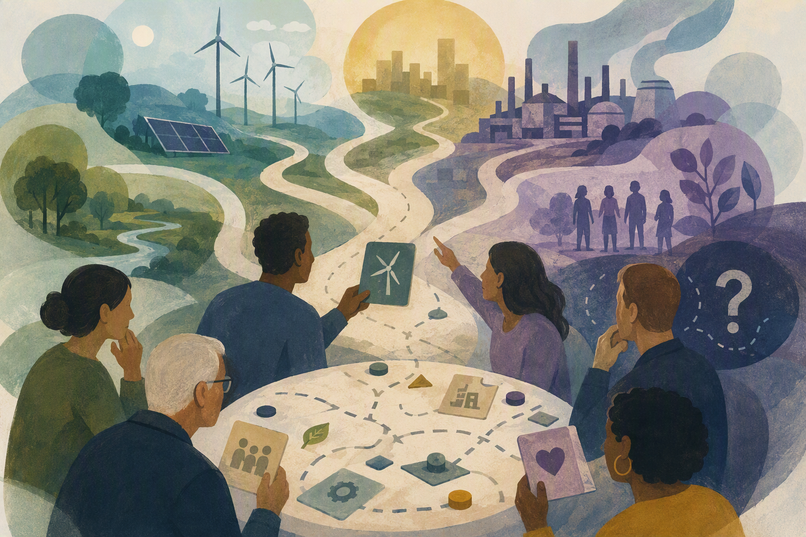

🪃 Welcome Back to the LowLands MTTers! 🪃
Being back means less sun, more work and other amazing things!
🎉 But it means we're also back to our colloquia and events schedule! 🎉
📌 You are warmly invited to the first colloquium of this new academic year
17-09-2026 | 16:00 - 17:00 | Lecture Hall H
Mini Symposium, invited speaker Karen Moesker (TPM)
17-09-2026 - Lecture Hall H
Mini-Symposium: Workshop

Humble Hydrogen Futures? A Participatory Game for Navigating Normative Uncertainty in Energy Transitions
Karen Moesker, Postdoctoral Researcher (Values, Technology and Innovation, TPM)
Hydrogen futures play a central role in contemporary energy transition governance, yet they are frequently shaped by reductionist assumptions about societal priorities and values. Because the future is unwritten and our norms and beliefs evolve alongside (un)expected events, embracing normative uncertainty is essential. Participatory scenario planning offers a promising framework for a more humble energy technology governance, yet it remains underutilized in hydrogen transitions. To us, being ‘humble’ means accepting that normative uncertainty is unavoidable and recognizing that people hold conflicting values, priorities change over time, and we rarely have absolute moral clarity when planning for the future. The method we are developing tries to better embed humility, as, unlike traditional futuring approaches that force convergence on preferred pathways or artificially stabilize expectations, participatory scenario planning prioritizes inclusiveness, multiplicity, contingency, and divergence. In this workshop, we would like to try out our newly developed participatory scenario planning game with the participants by looking at currently used hydrogen futures and breaking them apart in their sub-components. What do these futures promise? Who are important players? What values are deemed important to protect? The workshop has a twofold aim: first, to hope to gather insights into what participants deem critical both within and outside current hydrogen visions; and second, to collaboratively evaluate the effectiveness of the game itself as a tool for cultivating humble governance.
The M&TT Colloquia is a colloquium series that is organized within the department of Maritime and Transport Technology at Delft University of Technology. The organization is done by PhD students from this department.